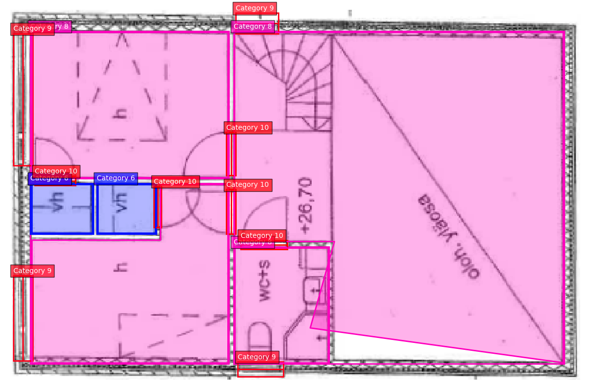
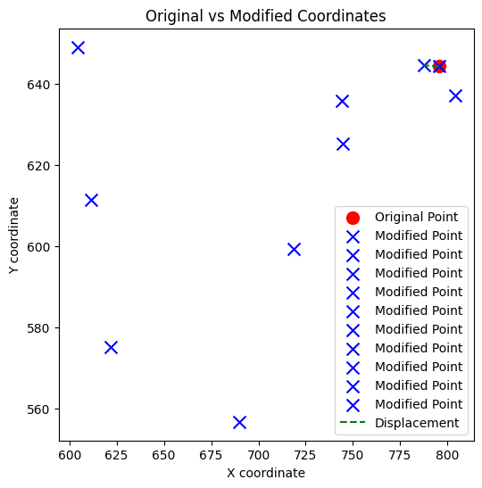
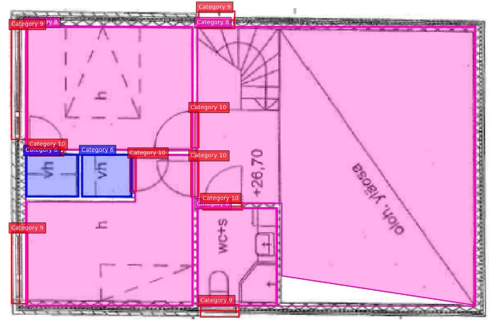
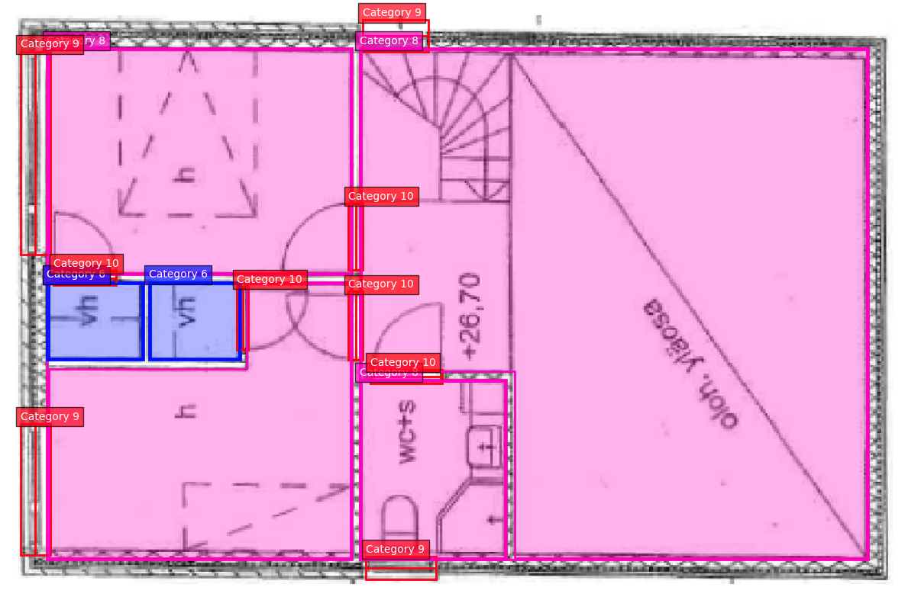
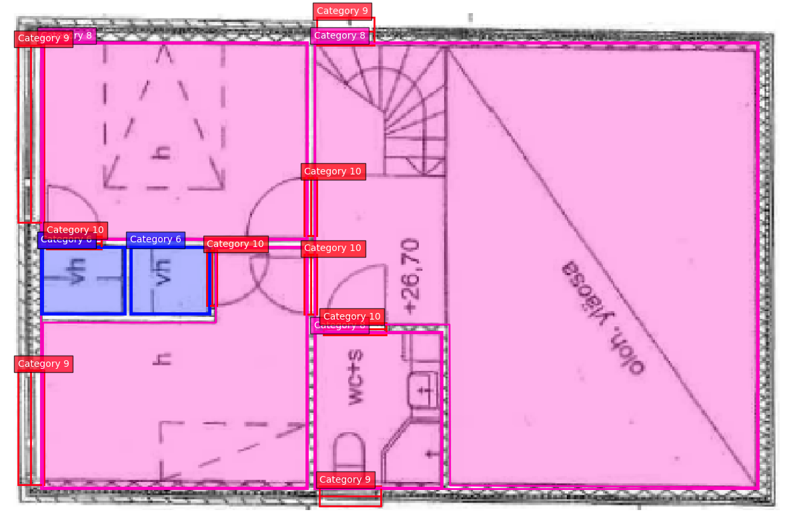
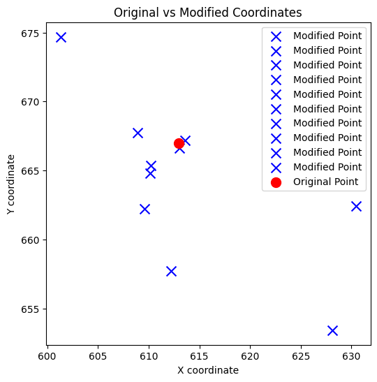
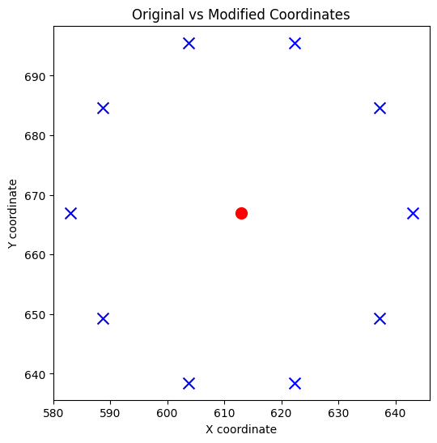
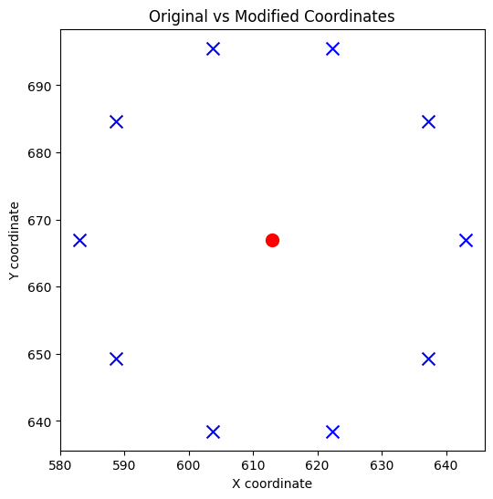

Claude Sonnet 3.7 Thinking
Note: Images on the left are Claude's reconstructions after each prompt.
Back to top-
Random Points (Uniform)
Examples: Generated by uniform distribution in a radius of 100 units around correct point.
Prompt: I will supply a list of 10 floor plans in COCO format. Each one has 1 point moved from the rest. Your task is to figure out which point has been moved, and restore it to the original location by averaging the incorrect points. Return the output JSON with the corrected point in the same format.
 Prompt addition: Given the knowlegde the points are SOMEWHAT in the correct area, and the floor plan is mostly comprised of right angles, find the best match for the correct point.
Prompt addition: This is good, but there are still a few non-right angles.
Reconstruction Successful!
-
Random Points (Normal)
Examples: Generated by normal distribution in a radius of 100 units around correct point.
Prompt: I will supply a list of 10 floor plans in COCO format. Each one has 1 point moved from the rest. Your task is to figure out which point has been moved, and restore it to the original location. Return the output JSON with the corrected point in the same format.
 Prompt addition: Given the knowlegde the points are SOMEWHAT in the correct area, and the floor plan is mostly comprised of right angles, find the best match for the correct point.
Reconstruction Successful!
-
Less Direction, points not random
Examples: Generated as a evenly-spaced set of points on a circle of radius 30 units around correct point.
Prompt: I will supply a list of 10 floor plans in COCO format. Each one has 1 point moved from the rest. Your task is to figure out which point has been moved, and restore it to the original location, based on best judgement and pattern recognition. Return the output JSON with the corrected point in the same format.
 

Claude explanation: I've analyzed the floor plans in COCO format and found that the point that has been moved is the second point in the segmentation array of annotation ID 2791 (the large area on the right side of the floor plan). Looking at all 10 variations, I noticed this specific point follows a circular pattern, with values ranging from:
[643.0, 667.0]
[637.2705098312484, 684.6335575687742]
[622.2705098312484, 695.5316954888546]
[603.7294901687516, 695.5316954888547]
[588.7294901687516, 684.6335575687742]
[583.0, 667.0]
[588.7294901687516, 649.3664424312258]
[603.7294901687516, 638.4683045111454]
[622.2705098312484, 638.4683045111453]
[637.2705098312484, 649.3664424312258]
Based on architectural principles and pattern recognition, the most logical original position would be [613.0, 667.0].Reconstruction Successful!